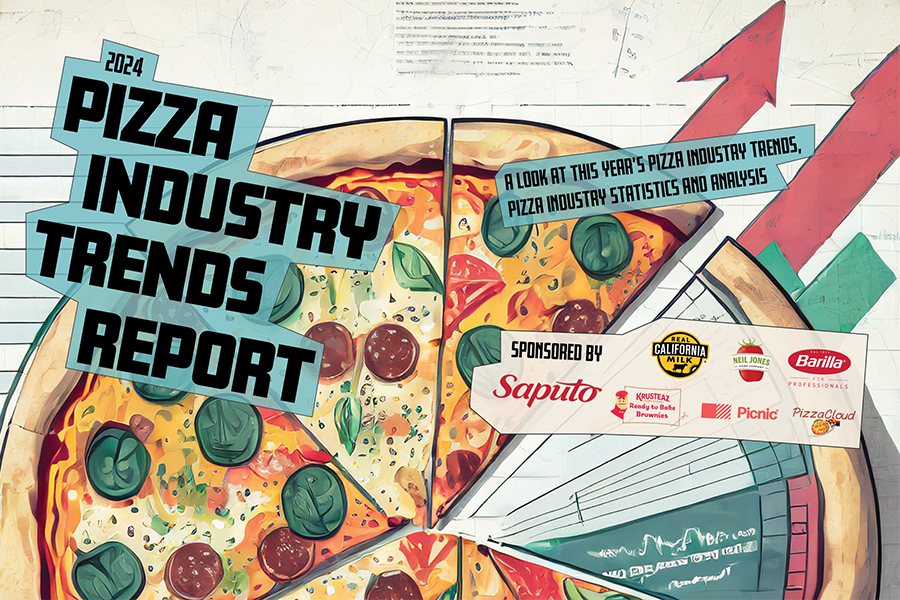

Latest Pizza Articles
Home
About us
Pizza Gallery
Pizza Quiz
Latest Pizza Articles
By Independent.co.uk
Air fryer pizza: Say goodbye to soggy dough and hello to perfectly crisp crusts
Great for on-the-go snacks or quick, midweek meals for the whole family, these five air fryer pizza recipes are all ready in under 20 minutes and crisped to perfection every time, says Hannah Twiggs
Ditch Deliveroo – make these healthy, 30-minute pizzas instead
Can’t wait for hot pizza? Ditch delivery apps and whip up your own in just 15 minutes, says Hannah Twiggs.Stop ordering pizzas on Uber Eats and get into the kitchen to make your own.
Domino’s delivers pizza to Glastonbury festival-goers by jet suit
Domino’s have announced they are trialling a jet suit pizza delivery service at this year’s Glastonbury.Hungry festival-goers can now order a pizza, which will be flown into them via jet pack.
By pizzatoday.com

2024 Pizza Industry Trends Report
Welcome to our second annual Pizzeria Industry Trends Report presented by Pizza Today. We provide you, pizzeria operators and pizza professional, with a gauge of vital pizzeria insights, issues and trends backed by your most trusted pizza industry source, Pizza Today.
Knead to Know: Achieving a Great Pizza Crust Color
There was a time on the Italian peninsula where gruel-eaters ruled. The ancient Etruscans of Italy ate a thick porridge of spelt and hot water called Puls. Then three things happened to evolve this gruel. The first was that the Puls was increasingly cooked on the stones beneath the ashes of fireplaces.
Hot Oil is a Great Pizza Topping and Condiment
Hot oil is the answer to what all your pizzas have been missing. Looking to add extra flavor to a basic cheese pizza? Hot oil. Looking for a fun condiment to keep on the tables? Hot oil. Does your Italian sub need some zing? Hot oil. As you can see, there are many ways to utilize this awesome ingredient.